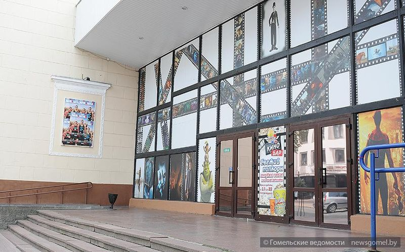
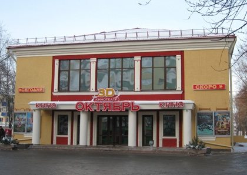
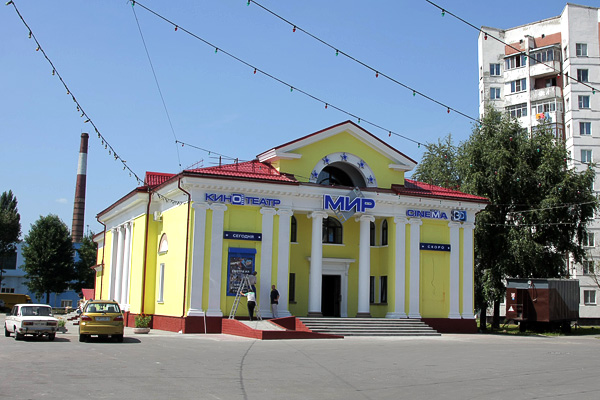

Премьеры
Дополнительную информацию о кинопремьерах в городе Гомеле, можно получить с таких ресурсов как:
Кинотеатр имени Калинино
Описание кинотеатра
Кинотеатр имени Калинина располагается в самом центре города Гомеля, по улице Коммунаров, 4. Кинотеатр имени Калинина – самый большой кинотеатр города. Кинозал кинотеатра рассчитан на 512 зрительских мест. В кинозале располагаются комфортные мягкие кресла, каждое из которых имеет подставку для поп-корна и напитков, на последнем ряду – двухместные диванчики «Love seat». Особенность кинозала – наличие VIP-зоны. В кинотеатре им. Калинина установлен экран размером 21,5х9 метров. Перламутровый экран французского производства создает исключительное качество изображения: насыщенность цвета, четкость и яркость, что порадует любого кинозрителя. Фильмы демонстрируются с кинопроектора CHRISTIE (производство Канада), позволяющего показывать фильмы в цифровом формате. Зал оснащен современной шестиканальной акустической системой Dolby Digital Surround – системой, позволяющей услышать тонкие нюансы звука, спецэффекты и создающей «эффект присутствия». Фойе кинотеатра располагает кинобаром с большим выбором напитков и поп-корна, а также другой вкусной продукции. Рядом с кинобаром располагаются столики с диванчиками, где можно провести время в ожидании киносеанса. В фойе кинотеатра установлены плазменные мониторы, где демонстрируются трейлеры фильмов и рекламные ролики. Красочная и уютная атмосфера холла кинотеатра настраивает посетителей на яркое и праздничное настроение. В кинотеатре демонстрируются фильмы на любой вкус. Сегодня репертуар кинотеатра – довольно разнообразный: это мировые премьеры самых различных жанров, комедия, фэнтези, приключения, триллер, драма и многое другое, также детские фильмы, анимация и мультфильмы. Приглашаем посетить кинотеатр имени Калинина!
Кинотеатр Октябрь
Описание кинотеатра
Кинотеатр предлагает гомельчанам и гостям города новинки мирового и отечественного кино как в 3D-формате, так и в цифровом 2D. Преобладающая часть демонстрируемых фильмов – это премьеры белорусского, российского, американского и европейского кино, а это значит, что наши зрители могут увидеть важнейшие новинки мирового кинематографа одновременно со всем миром. Кинотеатр «Октябрь» ежегодно становится местом проведения различных презентаций премьерных фильмов, кинофестивалей, дней иностранного кино и т.д. В кинотеатре – один кинозал на 214 мест, среди которых 7 комфортных двухместных диванчиков «Love seat», располагающихся в последнем ряду. Кинозал оборудован комфортабельными креслами с подлокотниками и подставками для напитков и поп-корна. Огромным преимуществом кинотеатра является большое расстояние между рядами в зале. В зале установлен серебряный экран французского производства размером 11х7 м. Фильмы демонстрируются с кинопроектора CHRISTIE (производство Канада), позволяющего показывать фильмы в цифровом формате. Кинопроектор оснащен 3D-системой Masterimage, благодаря которой возможно 3D –изображение с применением специальных очков со стереоскопическим эффектом. Зал оснащен современной шестиканальной акустической системой Dolby Digital Surround – системой, позволяющей услышать тонкие нюансы звука и создающей «эффект присутствия». В кинотеатре «Октябрь» установлено кондиционирование кинозала, что дает огромное преимущество при любых погодных условиях. В фойе кинотеатра размещен плазменный монитор, на котором демонстрируются трейлеры текущих фильмов, а также анонс ожидаемых премьер. В кассовом фойе располагается кинобар, где зрителям предлагается несколько видов поп-корна, прохладительные и горячие напитки, мармелад, шоколад и другие вкусности. Репертуар кинотеатра на сегодняшний день довольно разнообразный: это мировые премьеры самых различных жанров: комедия, фэнтези, приключения, фантастика, ужасы, триллер, боевик, драма и многое другое; также – детские фильмы, анимация и мультфильмы.
Кинотеатр Мир
Описание кинотеатра
Репертуар кинотеатра «Мир» составляют лучшие фильмы самых разнообразных жанров, всегда радует мировыми премьерами, молодежными хитами и блокбастерами, изысканным арт-хаусом, самым кассовым семейным кино и многим другим. Фильмы демонстрируются в цифровом формате 2D, а также в столь популярном сейчас формате 3D. Сейчас кинотеатр имеет один кинозал вместимостью 196 мест, видеозал с 30-тью зрительскими местами и VIP-зал для компаний до 6 человек. Каждый зал выдержан в своей цветовой гамме и стилистике. Все залы кинотеатра оснащены самым современным кинопроекционным и звуковым оборудованием. В большом кинозале установлены цифровой кинопроектор CHRISTIE (производство Канада), который позволяет демонстрировать фильмы в цифровом формате, и 3D-система Masterimage; располагаются комфортабельные кресла, в том числе кресла для влюбленных – уютные двухместные диванчики, расположенные в последнем ряду. Кресла имеют специальные подставки для напитков и поп-корна. В кинотеатре установлен серебряный экран чешского производства размером 9,6х4 м. Серебряные экраны обладают светоотражающим эффектом и идеально подходят для просмотра 3D контента. Насыщенность цвета, четкость и яркость порадуют всех любителей хорошей «картинки». Зал оснащен современной шестиканальной акустической системой Dolby Digital Surround, благодаря которой звук в кинозале распространяется более точно (на каждое кресло зала одинаково), и передает все тонкости спецэффектов. Звук в кинозале, звуковые эффекты по последнему слову техники создадут «эффект присутствия» с иллюзией полного погружения. Видеозал, рассчитанный на 30 посадочных мест, размещается на втором этаже кинотеатра, оснащен современной аудио- и видеоаппаратурой, которая позволяет демонстрировать на экране размером 4х2,25 м. DVD-изображение, а также Blue-ray диски. Здесь проводятся тематические кинопоказы, бизнес-семинары, пресс-конференции и другие мероприятия. Меню видеозала отличается огромным разнообразием фильмов и мультфильмов. Жанровое разнообразие представляемых фильмов заинтересует любого, даже самого взыскательного поклонника кино, так как широта представленного репертуара позволит гостям делать самостоятельный выбор – будь-то полюбившиеся картины прошлых лет или самые последние новинки кинорынка. Большой экран, комфортные кресла, качественный звук, даже расположение ступенек учитывает угол обзора для зрителя – всё продумано до мелочей. Особенность кинотеатра – наличие VIP-зала вместимостью до 6 человек, где созданы исключительные условия для зрителей, которые не встретишь ни в одном из существующих гомельских кинотеатров, тем самым превращая кинотеатр в любимое место проведения досуга жителей нашего города. Помещение с повышенной звукоизоляцией, созданной благодаря специальным акустическим плитам, вместит небольшую компанию. VIP-зал оснащен современной аудио- и видеоаппаратурой, которая позволяет демонстрировать на экране размером 1,3х2,25 м. DVD-изображение, а также Blue-ray диски. Здесь зрители смогут посмотреть фильмы в удобное для них время, выбрав жанр на свой вкус. Все залы кинотеатра оборудованы кондиционерами, что позволяет зрителям чувствовать себя комфортно в любую погоду. В фойе кинотеатра располагается кинобар, где зрителям предлагается несколько видов поп-корна, прохладительные и горячие напитки и многое другое. Также фойе кинотеатра располагает столиками с диванчиками, где можно посидеть за чашечкой кофе в предвкушении просмотра фильма. Тем более, что фойе кинотеатра «Мир» поражает своей красотой. Классический стиль холла вместе с современным репертуаром и техническим оснащением создает неповторимое эстетическое впечатление.